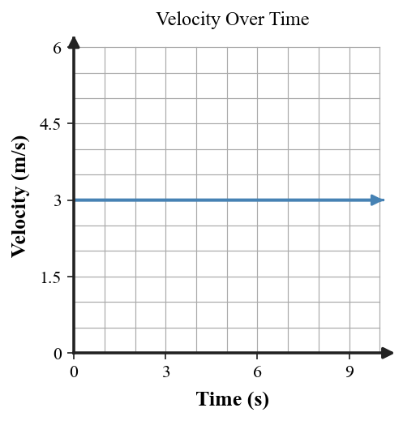

Six-question DOK check for Section 1.2: 2 DOK 1, 2 DOK 2, 1 DOK 3, and 1 DOK 4.
Define force in everyday physics language and give one example of a push or pull.
Which statement is possible: “no forces act” or “forces act but the net force is zero”? State whether both can occur.
Use the second motion-dot diagram to describe the motion change. What feature of the dots gives the evidence?
Use the velocity-time graph. Describe the motion shown and state what Newton’s First Law implies about net force during the flat segment.

A physics student draws a forward arrow labeled inertia on a moving rolling bust. Critique the model and replace the misconception with an accurate explanation.
Two physics students explain why a puck keeps moving after the stick loses contact. Compare the explanations, identify the stronger one, critique the weaker one, and defend your choice with Newton’s First Law and evidence.